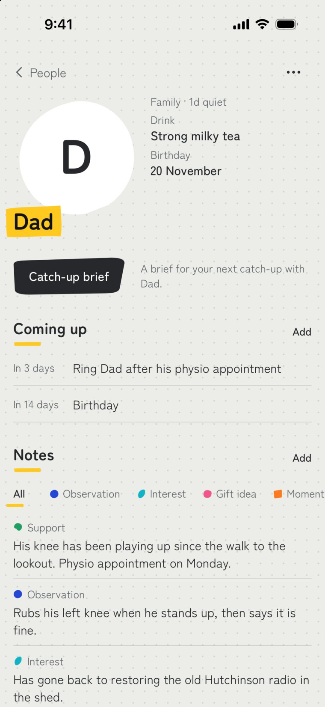
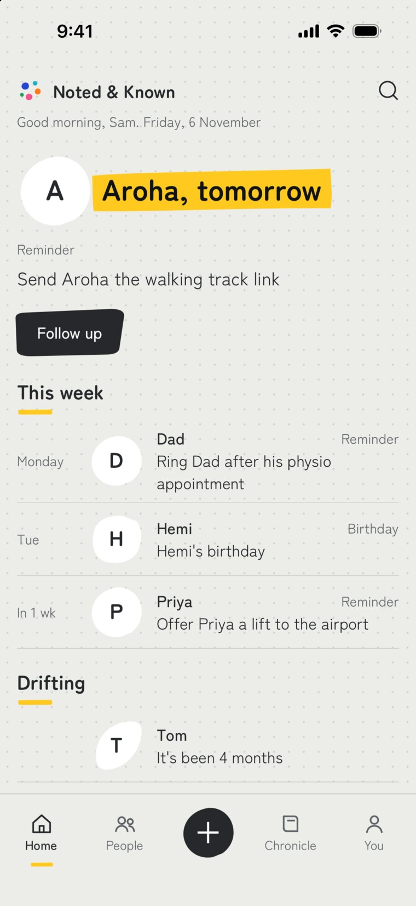
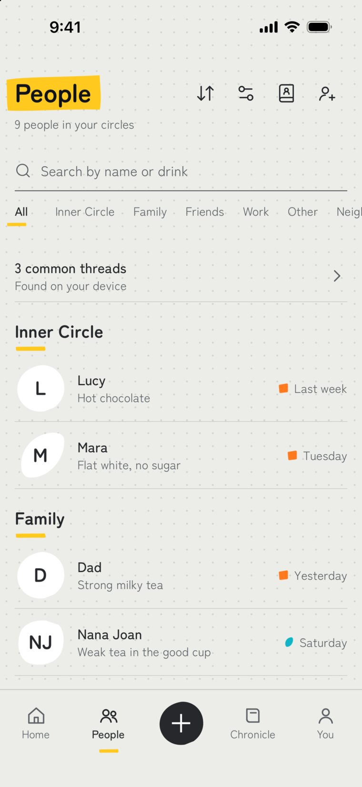
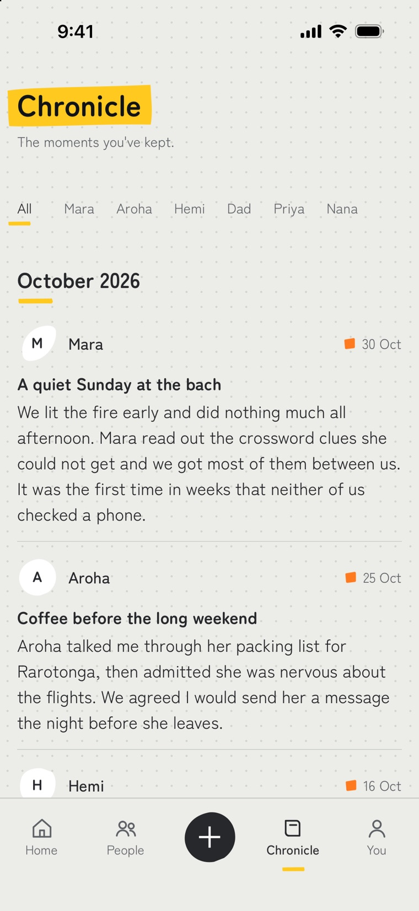
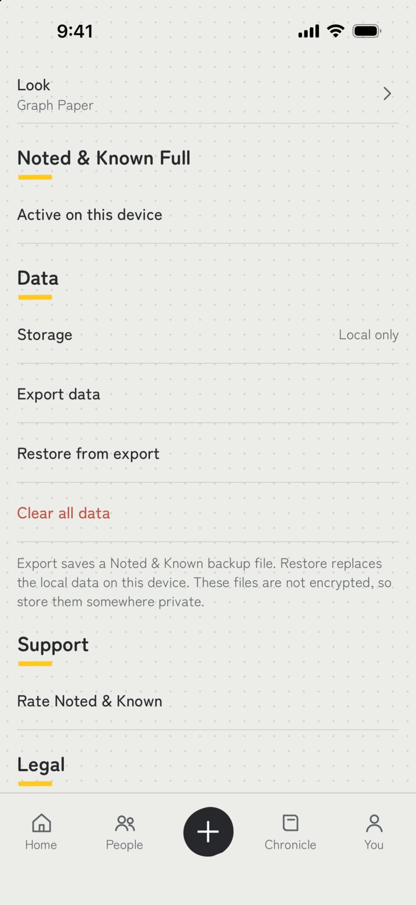
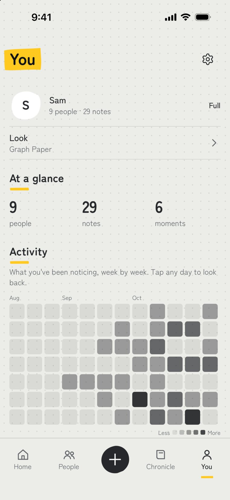

NotedKnown
A private, on-device iPhone app for remembering people by the small details, designed and built by me.



At a glance
What they needed
My own brief, this time. The things that make people feel known are small: the book a friend mentioned once, the interview they have on Thursday, how they take their coffee. Phones hold everything else about our lives, yet those details had no good home; the closest tools are CRMs, and those are built for sales pipelines.
What I did
I designed an app from scratch, prototyped and refined it, then built it in React Native for iOS.
What changed
A whole product, from early research to the store listing.
Starting from a habit
I started by asking what caring attention looks like from one week to the next, before I wrote any feature list.
It settled into five kinds of note, a catch-up brief and gentle reminders timed to the moments they serve.
What it does
Each person gets a page for the details you’d otherwise lose, with a catch-up brief before you next see them and reminders timed to the moment. The Chronicle keeps a dated record of what you noticed, in your own words.

Private by build
I kept everything on the device, with no account and no cloud copy, because writing something tender about a friend shouldn’t feel like publishing it.
The app can lock behind Face ID or your passcode, and everything can leave with you as an export.

Why I made it
Built because I kept forgetting the small details too.
Client work usually starts with a message. This one started with something people do every day, and I made each decision to fit it: pricing that doesn’t charge people for having friends, privacy that makes it safe to be honest, and a You screen that shows you your own week without ranking you.
It’s the best proof I can give that the process behind my websites works for a very human problem too, from the first sketch to the App Store.

The result
Built for iOS, with its own store listing and website.